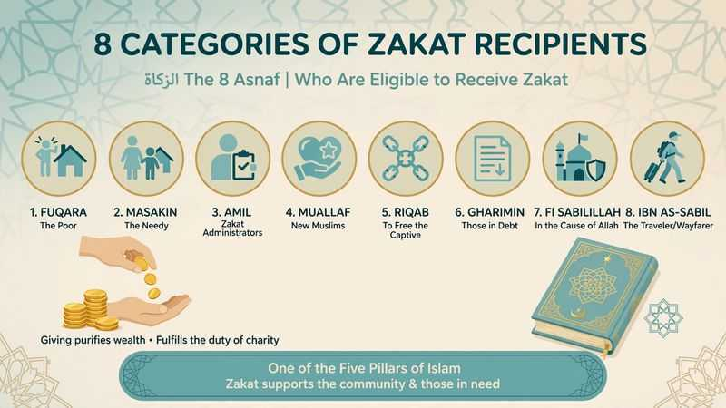

8 Categories of People Eligible for Zakat: Quran 9:60 Guide

Who can receive Zakat? Islam identifies eight categories of eligible recipients in the Quran. Understanding these categories helps Muslims direct their obligatory charity responsibly and distinguish Zakat from voluntary Sadaqah.
This guide explains the eight categories mentioned in Quran 9:60, the meaning of Nisab, the basic 2.5% calculation for eligible wealth, and common questions about family members, debts, savings, gold, investments, and charitable projects.
What Is Zakat and Why Are There Eight Categories?
Zakat is an obligatory form of worship involving the payment of a prescribed share of eligible wealth to qualifying recipients. It is one of the Five Pillars of Islam. The word is associated with purification and growth.
The Quran describes Zakat as a means of purification in Surah At-Tawbah 9:103. The recipients of Zakat are specifically addressed in Surah At-Tawbah 9:60.
Zakat is different from voluntary charity, known as Sadaqah. It has eligibility requirements and rules for calculating and distributing it. For an introduction to the Five Pillars, read our guide to the Five Pillars of Islam.
What Is the Nisab Threshold?
Nisab is the minimum wealth threshold used to determine whether a person is liable to pay Zakat on qualifying assets. The traditional gold and silver standards are commonly expressed as approximately 87.48 grams of gold or 612.36 grams of silver.
The monetary value of these amounts changes with market prices and currency exchange rates. For that reason, a fixed dollar figure can quickly become outdated. Check a current, reputable Zakat calculator or ask a qualified scholar which Nisab standard applies to your circumstances.
Scholars differ over whether the gold or silver standard should be used for certain types of wealth. Islamic Relief explains both standards and discusses the differences in its Nisab guide.
Does Zakat Require a Full Lunar Year?
For many types of wealth, the passage of one lunar year while meeting the applicable conditions is part of the calculation. However, the detailed rules are not identical for every type of asset or every scholarly school. Agricultural produce and certain other categories have different rules.
Do not assume that every asset follows exactly the same Nisab and lunar-year rules. If your income, savings, investments, or debts make your situation complicated, consult a qualified scholar familiar with your school of jurisprudence.
The Eight Categories of People Eligible for Zakat: Quran 9:60
Surah At-Tawbah 9:60 names eight categories for the distribution of Zakat. The Arabic terms below are commonly used to describe these categories. Their precise application in modern circumstances can involve scholarly interpretation.
1. Al-Fuqara (الفقراء) — The Poor
This category refers to people who lack sufficient resources to meet their essential needs. Depending on their circumstances and the applicable scholarly criteria, eligible recipients may include people with very little income, families struggling to afford basic necessities, or people experiencing severe financial hardship.
2. Al-Masakin (المساكين) — The Needy
This category refers to people whose resources are insufficient for their needs. A person may have some income and still be unable to cover essential living costs such as food, housing, clothing, or necessary care.
Scholars have discussed the distinction between the poor and the needy in different ways. In practical assessments, a person's actual financial circumstances and essential needs matter.
3. Al-Amilina Alayha (العاملين عليها) — Those Who Administer Zakat
This category refers to people appointed to collect, administer, or distribute Zakat in accordance with the relevant rules. Whether a particular organization's employees or operating expenses qualify depends on the nature of their work and the applicable scholarly guidance.
Do not assume that every charity employee or every administrative expense automatically qualifies under this category. Organizations distributing Zakat should explain their policies and seek qualified Sharia guidance.
4. Al-Muallafatu Qulubuhum (المؤلفة قلوبهم) — Those Whose Hearts Are to Be Reconciled
This category concerns people whose hearts are to be reconciled, as described in Quran 9:60. Scholars have discussed who qualifies and how this category applies in different circumstances.
A new Muslim is not automatically eligible solely because they recently embraced Islam; their circumstances and the applicable scholarly criteria matter. Decisions about giving Zakat under this category should be made with qualified religious guidance.
5. Ar-Riqab (الرقاب) — Emancipation and Those in Bondage
This category is traditionally associated with emancipation from bondage. Scholars have discussed how it applies to different forms of captivity and coercion.
Modern situations involving human trafficking, forced labor, or captivity may raise important questions, but not every related expense is automatically eligible for Zakat under every scholarly view. Seek qualified guidance before allocating Zakat to a specific program.
6. Al-Gharimin (الغارimin) — Those in Debt
This category includes qualifying people burdened by debt who meet the applicable conditions. Their financial circumstances, the purpose and nature of the debt, and their ability to repay it may all be relevant.
A person with debt is not automatically eligible in every case. Debt incurred for essential needs can be assessed differently from other debts, and scholars differ over some details. A qualified Zakat administrator can help assess eligibility while protecting the person's privacy.
7. Fi Sabilillah (في سبيل الله) — In the Cause of Allah
The phrase means “in the cause of Allah.” Scholars differ over the scope of this category and how it applies to modern projects and expenses.
Some interpretations apply it to specific forms of service and religious effort, while other interpretations discuss a wider range of charitable purposes. Islamic education, mosque construction, school fees, or general community projects should not be assumed to qualify automatically under every view.
Before using Zakat for an institution or project, consult a qualified scholar who can assess whether the proposed use falls within an accepted interpretation. For general learning, see our guide to Islamic Studies for Beginners.
8. Ibn As-Sabil (ابن السبيل) — The Stranded Traveler
This category refers to a traveler who lacks the resources needed to continue a lawful journey or return home, even if the traveler has wealth elsewhere that is temporarily inaccessible.
Eligibility depends on the person's actual circumstances and the applicable conditions. A traveler is not automatically eligible simply because they are away from home.
📌 Quick Summary: The Eight Zakat Categories
- Al-Fuqara: The poor.
- Al-Masakin: The needy.
- Al-Amilina Alayha: Those appointed to administer Zakat.
- Al-Muallafatu Qulubuhum: Those whose hearts are to be reconciled.
- Ar-Riqab: Emancipation and those in bondage.
- Al-Gharimin: Qualifying people in debt.
- Fi Sabilillah: In the cause of Allah, as interpreted by qualified scholarship.
- Ibn As-Sabil: The stranded traveler.
These categories are named in Quran 9:60. How they apply to a particular person, institution, or project may require scholarly assessment.
How to Calculate Zakat: The Basic 2.5% Formula
For many common forms of eligible wealth, the basic calculation is 2.5% of the applicable net Zakatable amount after accounting for the relevant deductions and conditions.
Basic formula:
Eligible net Zakatable wealth × 0.025 = Zakat due
Example Calculation
Suppose a person has $10,000 in eligible cash savings, $3,000 in Zakatable gold, and $5,000 in eligible investments. If all of these assets are subject to Zakat under the person's applicable rules, and there are no relevant deductions in this simplified example, the total is $18,000.
$18,000 × 0.025 = $450
This is an illustrative example, not a complete ruling for every person's assets. The treatment of debts, investments, jewelry, retirement accounts, and other holdings can vary.
What Assets May Be Included?
Depending on the asset and the applicable scholarly rules, Zakat calculations may include cash, savings, gold, silver, qualifying business inventory, certain investments, and money owed to the person that is expected to be repaid.
Do not automatically include or exclude an asset without checking its relevant rules. For example, investment holdings and retirement accounts may require a more specific assessment.
Zakat on Gold, Savings, Retirement Accounts, and Stocks
Zakat on Gold and Jewelry
Gold is relevant to Zakat calculations, but the treatment of personal jewelry is a recognized area of scholarly disagreement. Some schools require Zakat on qualifying gold jewelry, while others exempt certain jewelry intended for permissible personal use, subject to their conditions.
Gold held as an investment or for trading may be treated differently from jewelry worn for personal use. Check the rules of the scholarly school you follow.
For more guidance on Islamic rulings in daily life, see our Fiqh Made Easy guide.
Zakat on Retirement Accounts in the USA
Retirement accounts such as 401(k)s and IRAs can involve restrictions on access, penalties, taxes, and different types of underlying assets. Scholars differ on how and when Zakat applies to these accounts.
Do not assume that either the full account balance or only the amount withdrawn is always the correct basis. A qualified scholar familiar with retirement accounts can assess your circumstances and the scholarly approach you follow.
Zakat on Stocks and Investments
The treatment of stocks depends in part on the nature of the investment and the purpose for which it is held. Shares purchased for trading may be assessed differently from long-term holdings. Scholars also discuss how to account for relevant Zakatable assets, earnings, and liabilities in investment portfolios.
Because investment structures differ, use a reliable Zakat calculator that explains its methodology or seek qualified advice before calculating a large or complex portfolio.
Zakat on Business Assets
Business owners may need to assess cash, qualifying inventory, receivables, and relevant liabilities. The treatment of equipment, property, and other business assets can differ according to their purpose and the applicable rules.
A business Zakat calculation should reflect the actual nature of the business rather than simply applying 2.5% to every item on its balance sheet.
Who May Not Receive Your Zakat?
Zakat has specific recipient rules. Some relationships and financial circumstances can prevent a person from receiving Zakat from a particular donor. The details should be checked against the relevant scholarly school.
- Parents and grandparents: In general, a person cannot use Zakat to meet the ordinary maintenance obligations they owe to their ascendants.
- Children and grandchildren: In general, a person cannot use Zakat to meet the ordinary maintenance obligations they owe to their descendants.
- A spouse: The rules depend on the relationship, the donor's school of jurisprudence, and the circumstances. Ask a qualified scholar rather than relying on a blanket rule.
- A person who does not meet an eligible category: Being a friend, neighbor, or relative does not by itself establish eligibility.
- General construction projects: Mosque construction and similar projects are not automatically eligible uses of Zakat. Many scholars require Zakat to reach an eligible recipient, and the treatment of institutional projects depends on the relevant scholarly interpretation.
A poor brother, sister, aunt, uncle, or other relative may qualify if they meet the recipient criteria and no other rule prevents the payment. Helping an eligible relative can also support family ties. Verify the circumstances before distributing Zakat.
Zakat vs. Sadaqah: What Is the Difference?
| Zakat | Sadaqah |
|---|---|
| Obligatory when its conditions are met. | Usually refers to voluntary charity. |
| Has specific eligibility and distribution rules. | Can generally be given more broadly. |
| Often calculated at 2.5% for qualifying monetary wealth. | No single fixed percentage applies to ordinary voluntary giving. |
| Subject to the relevant Nisab and other applicable conditions. | Can be given without meeting Zakat's wealth threshold. |
| Must be directed according to Zakat recipient rules. | Can support a wider range of charitable needs and projects. |
For further reading on the principles of Islamic practice, explore our Islamic Studies guide and Five Pillars of Islam guide.
Frequently Asked Questions About Zakat
Can I give all my Zakat to one person?
The rules about distributing Zakat among recipients and categories have been discussed by scholars. In many circumstances, giving to one eligible recipient may be acceptable, but the details depend on the applicable scholarly guidance and the circumstances. Ask a qualified scholar if you are unsure.
Can I give Zakat to my brother or sister?
A brother or sister who genuinely qualifies as a Zakat recipient may be eligible, provided the other conditions are met. Rules differ for relatives whose ordinary maintenance is the donor's responsibility. Check the applicable ruling before paying.
Do I pay Zakat if I have debts?
The treatment of debts and liabilities depends on the type of debt, when payment is due, the assets involved, and the scholarly method used. Do not automatically deduct every long-term debt in full or assume that no debt can be deducted. Use a reliable calculation method consistent with qualified guidance.
Can I pay Zakat monthly?
Some scholars permit paying Zakat in advance through installments, with a reconciliation when the Zakat due date arrives. If you pay in advance, keep records and verify whether the amount paid covers the actual liability when it becomes due.
Do I pay Zakat on the home I live in?
A personal residence used for ordinary living is generally not treated like cash savings or trading inventory. Other assets connected with property, such as rental income or property held for resale, may have different rules.
Can Zakat be used to build a mosque or school?
Do not assume that every mosque, school, or community project qualifies. Scholars differ over the scope of certain categories, especially Fi Sabilillah, and many require Zakat to be transferred to eligible recipients. Consult a qualified scholar before directing Zakat to a project.
Where can I check the current Nisab value?
Because gold and silver prices change, use a current Zakat calculator that displays its reference date and explains whether it uses the gold or silver standard. You can consult Islamic Relief's Nisab information as one reference, while following the scholarly guidance appropriate to your circumstances.
🎓 Continue Learning Islamic Studies
Zakat is one part of Islamic jurisprudence and worship. Learn more about Islamic practice through our Islamic Studies Course.
Important note: This article provides general educational information and is not a personal fatwa. Zakat rulings can differ according to the type of wealth, personal circumstances, and scholarly school. Consult a qualified scholar for a ruling on your specific situation.